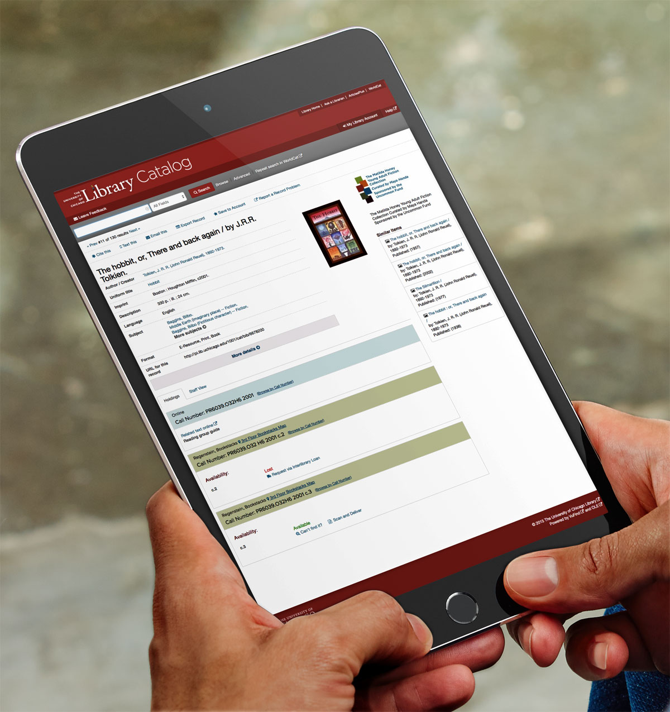
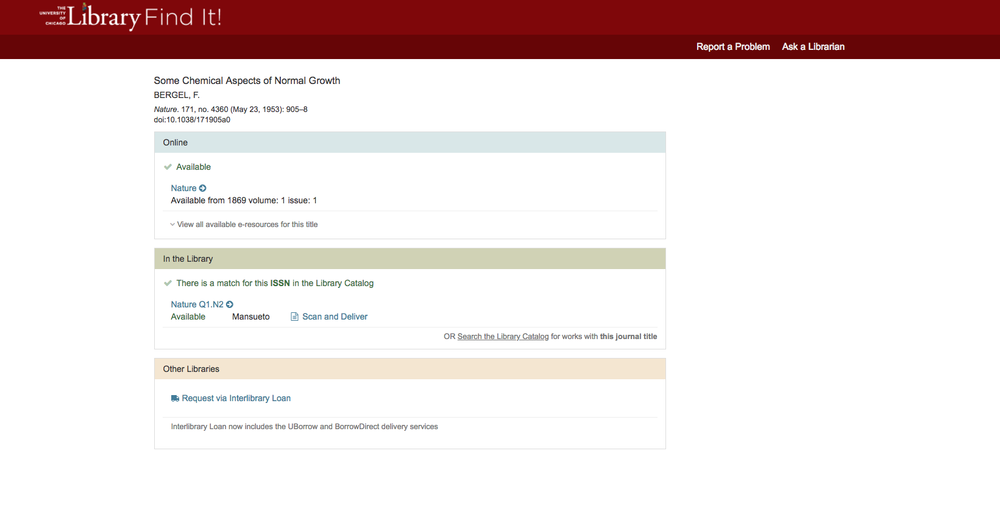
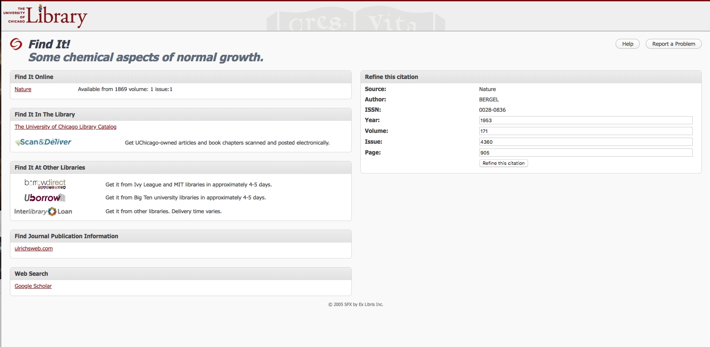

Interface restructuring and integration of various external databases and platforms.

Item Request Page: Displays local copies & e-resources Before / After (Item Request Page)


Problem
Requesting library items was an arduous and frustrating series of tasks.
Users were asked to choose between four different Interlibrary Loan (ILL) services without knowing which service had the item they needed. Patrons had issues determining if items were available, often overlooking online editions. Multiple subscription platforms resulted in duplicate listings of online articles, leading users to choice paralysis.
Solution
Informed by user testing, we simplified the Interlibrary Loan page, segmenting the options into three choices: online access, copies in the Library, and Interlibrary Loan (ILL).
Online resources are deduped so that only the best e-resource link is displayed to the patron, getting rid of choice paralysis.
Easily scannable: item availability integrated from Catalog database, with unavailable items clearly shown.
Updated workflow to one ILL link, "Request from Interlibrary Loan," removing the action of the patron choosing the outside source.
Behind the scenes, ILL staff choose the best service, favoring lending institutions with reciprocal agreements, thus saving the Library money.
Improved user flow by allowing several escape hatches if the item is not available: search via a global catalog, return to our Catalog, or fill out an ILL request form.
The three module options, color coding, and iconography used in the ILL page is also used in the Catalog to maintain consistency.
Impact
User interviews have shown a improved view of Interlibrary Loan from being a slow and arduous service to one that is quick and seamless.
Catalog data displayed on the front end mirrors the Catalog database, allowing us to remove delicate customizations and speed-up debugging when record-specific errors occur.